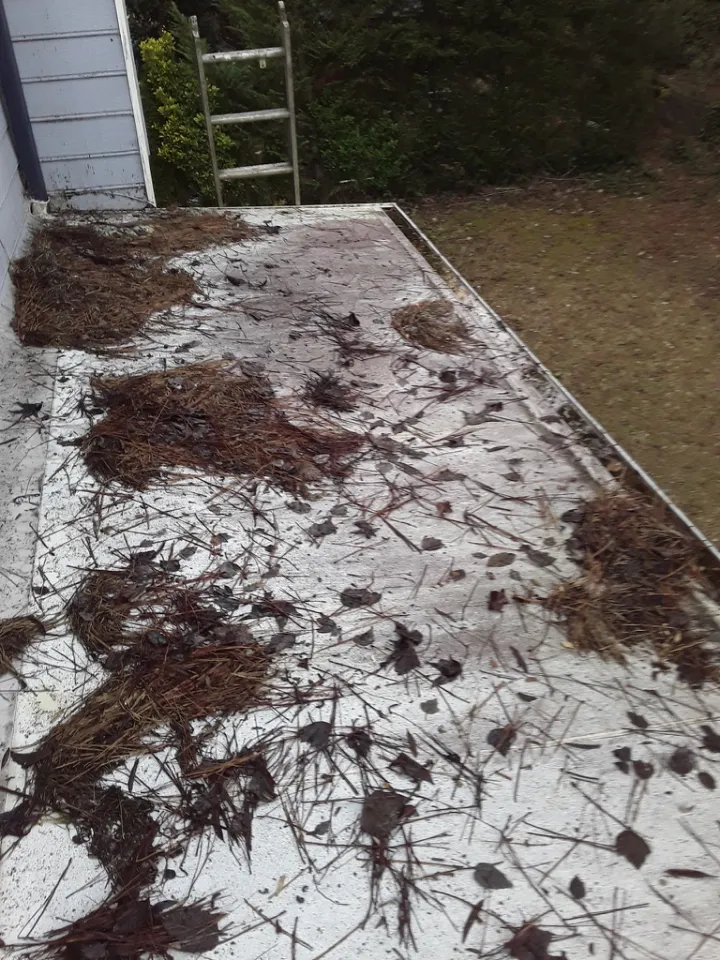
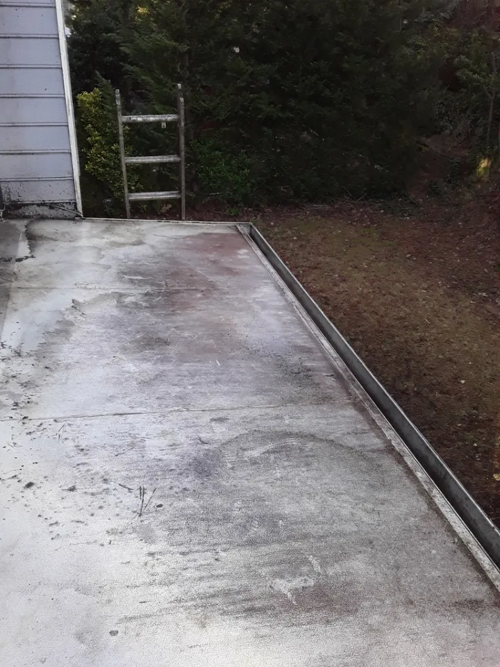
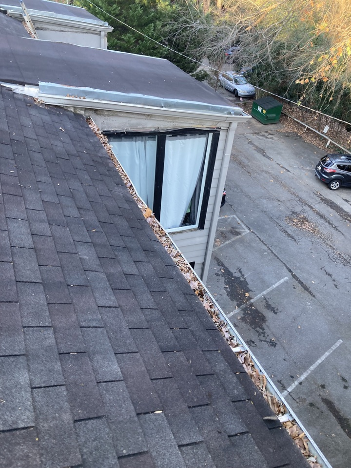
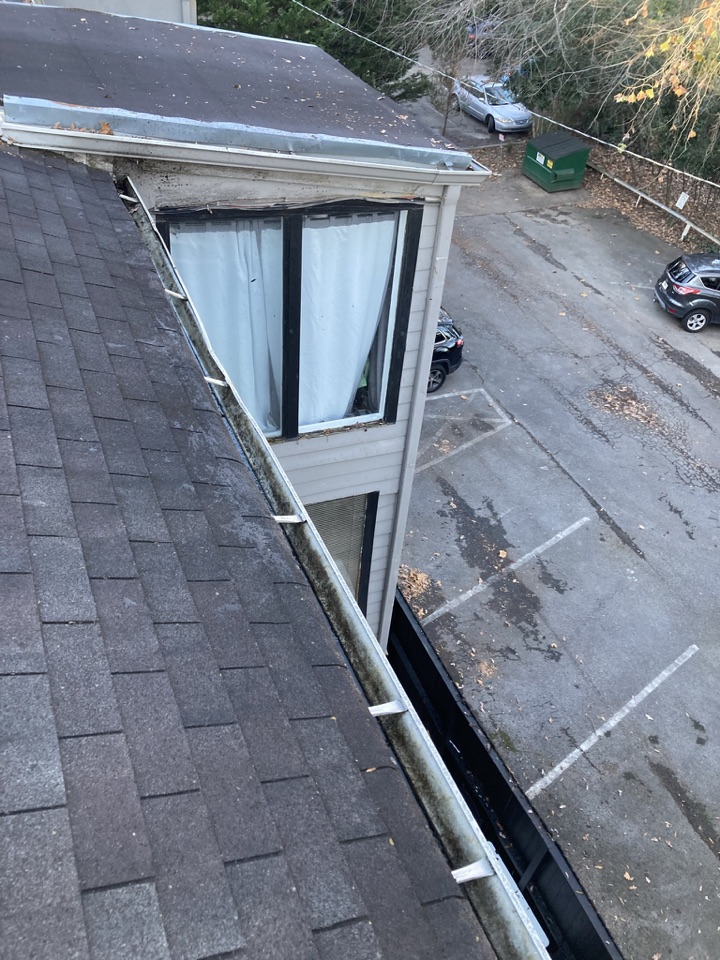

Metro Atlanta + surrounding areas
Clear gutters. Less water trouble.
Professional gutter cleaning, downspout clearing, and roof debris removal across metro Atlanta.
Request a quote online, or call 1 (800) 518-6030.
Get a Free QuoteConsistently 5-star customer feedback
Trusted by local homeowners
A few reasons metro Atlanta homeowners call us first.
Derrick Chester — Owner, DC Services Roof and Gutter Cleaning
Consistently 5-star customer feedback
Real recommendations shared by local customers on Nextdoor.
★★★★★
“Thanks Derrick for cleaning my roof and gutters on such short notice. With all this rain, the gutters are not overflowing and all leaves are off the roof. Please feel free to use me as a reference.”
Faith★★★★★
“DC Services Roof and Gutter Cleaning, (Derrick Chester) does an A++ Job and I highly recommend him.”
Owen★★★★★
“He has worked for us a couple of times and always does a great job. Highly recommend him!”
Andrea R., Rivershyre★★★★★
“I have use Derrick twice and nothing but top notch service. He’s so good. My neighbor started to use him.”
J.★★★★★
“I use this guy every time.”
A.J.★★★★★
“I use Derrick as well. He is awesome and great prices.”
Wendy L., Mckendree Park★★★★★
“We use Derrick too he is awesome”
NicoleSee the work
Real cleanings, not stock photos
See recent gutter cleaning and roof-debris work from metro Atlanta visits.
Get a Free QuoteService area + guarantees
We serve metro Atlanta
From routine seasonal cleanings to downspout clogs after a storm, the next step stays simple: request a property-specific quote online or call Derrick.
- Metro Atlanta, based in Lawrenceville (up to 1 hour out)
- Quotes based on the actual property and requested scope
- Insured through Gaslamp Insurance Services
What we handle
Everything we do, from routine cleanings to roof debris removal.
Gutter cleaning
Remove leaves, pine needles, roof grit, and debris before water backs up.
Downspout clearing
Clear drainage paths so stormwater moves away from the foundation.
Roof debris removal
Clear leaves and needles off the roof before they wash into the gutters.
More from recent visits
Short clips from gutter cleanings, downspout clears, and finish work around metro Atlanta.
See the difference
Gutter cleaning and roof debris removal on residential homes and commercial buildings.
Residential roof debris removal
 Before
Before
 After
After
Commercial roof debris removal

Before
AfterMulti-unit gutter cleaning

Before
AfterCommon questions
Answers to what most homeowners ask before booking.
How is pricing determined?
Pricing depends on your home's roof size, story count, and access — we'll give you an exact number after a quick look at the property.
Are downspouts included?
Downspout clearing is available. Your quote will state exactly what is included for the property.
Do you remove the debris, or just clear the gutters?
Roof debris removal and cleanup are available. The scope is confirmed in your quote before work begins.
Do I need to be home for the appointment?
Share any pets, gate codes, or access details with your request. Derrick will confirm whether anyone needs to be present.
What areas do you serve?
Metro Atlanta, based in Lawrenceville — up to about an hour out.